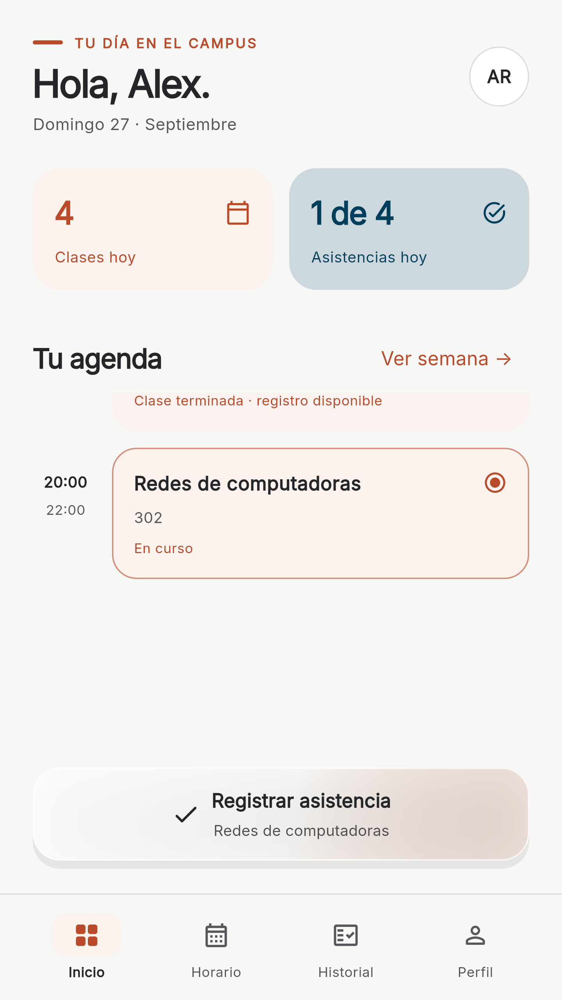
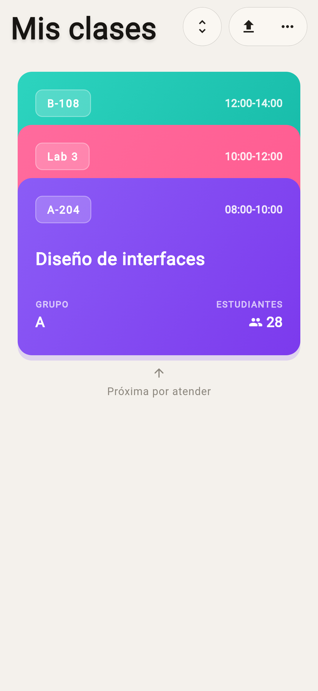
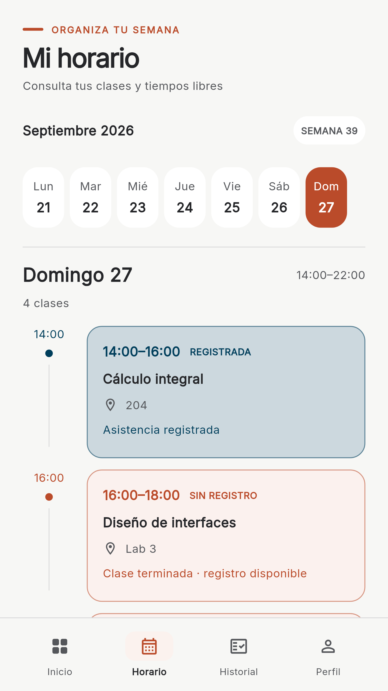
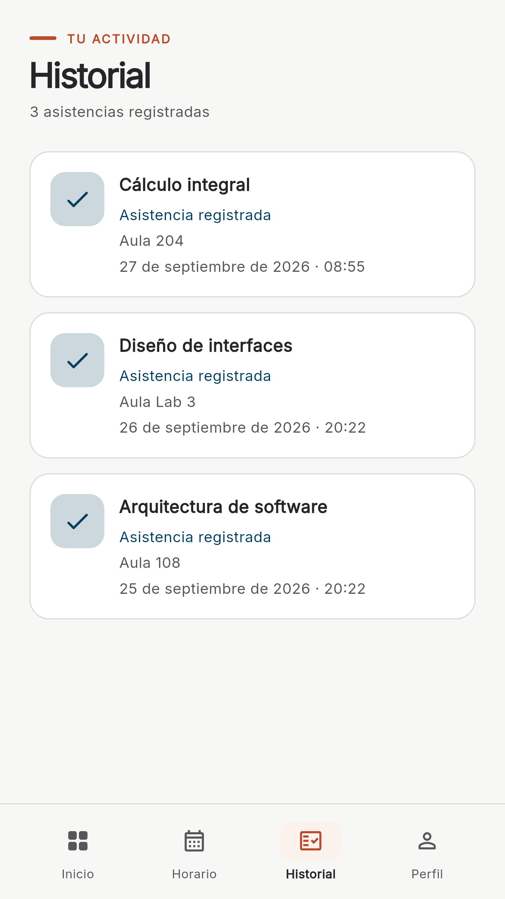
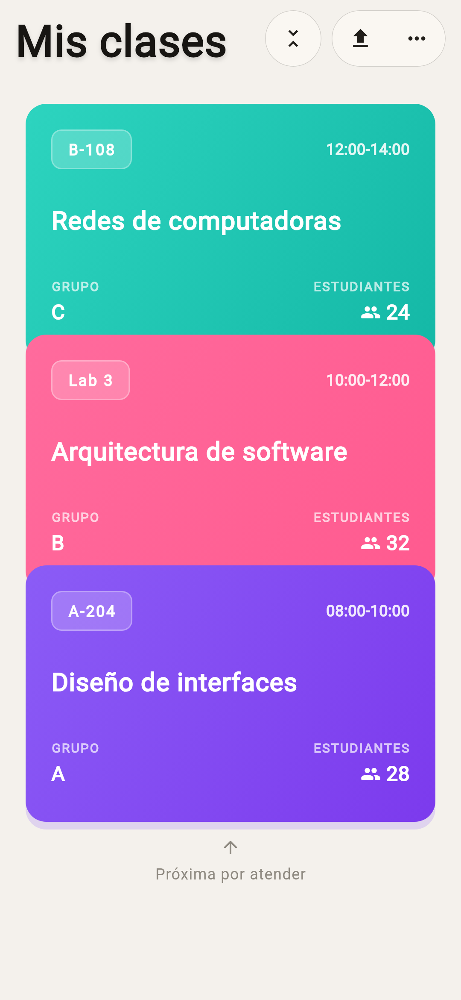

Docente abre la clase
Selecciona el grupo y comienza el pase de lista desde su aplicación.
Presencia en cada clase
Alumnos y docentes conectados en el momento de registrar la asistencia.


La información que necesita cada persona, a la mano cuando empieza la clase.
App de alumnos
Consulta tus clases del día, confirma tu presencia cuando el docente abra el pase de lista y revisa tu historial.
Antes de claseRevisa materia, hora y salón desde el celular.
Durante el paseActiva Bluetooth y los permisos solicitados para registrar tu asistencia.
DespuésConsulta el resultado y tus registros recientes.



App de docentes
Abre tus grupos, consulta el alumnado vinculado y administra la asistencia de cada clase desde una sola app.
Mis clasesEncuentra grupos, horarios y salones asignados.
En el aulaInicia el pase y verifica la presencia mediante las funciones Bluetooth disponibles.
SeguimientoRevisa registros y sincroniza las listas pendientes cuando tengas conexión.
La confirmación ocurre durante una clase activa. Cada persona conserva una vista adecuada a su rol.
Selecciona el grupo y comienza el pase de lista desde su aplicación.
Desde el aula, usa la app para registrar su presencia con los permisos necesarios.
El registro queda disponible para seguimiento conforme a las reglas de la institución.
Ayuda rápida
Comprueba lo esencial antes de solicitar apoyo. Nunca compartas tu contraseña.
Comprueba Bluetooth, los permisos de ubicación que solicite el sistema y que estés dentro del salón. Confirma con el docente que el pase de lista siga abierto.
Verifica tu conexión, cierra y abre la app. Si continúa, contacta a coordinación con tu matrícula y una captura del problema.
Solicita a coordinación la autorización para vincular el dispositivo nuevo.
Comprueba la conexión e intenta actualizar. Si los grupos del ciclo siguen sin aparecer, reporta el caso a coordinación.
Revisa tu conexión y la sección de asistencias pendientes. No cierres sesión antes de verificar el estado de los registros.
Verifica que esté vinculado al grupo y que tenga Bluetooth y permisos activos. Si persiste, registra la incidencia con coordinación.
Transparencia
Consulta las condiciones de uso y el tratamiento de información según la app que utilizas.